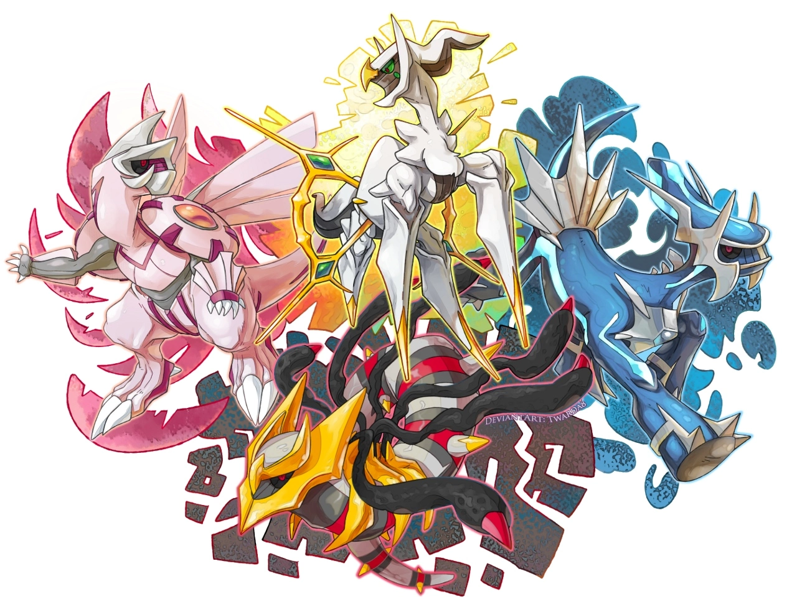

À propos de Mythologie Pokémon
Notre mission
Mythologie Pokémon est un projet dédié à l'archivage des légendes fondatrices de l'univers de Sinnoh, de l'éveil d'Arceus à la mise en place de la « start-up cosmique » avec Dialga et Palkia.
Notre but est d'expliquer comment la volonté, le savoir et les émotions ont été distribués aux êtres vivants par le trio des lacs, offrant ainsi une compréhension profonde des forces qui régissent notre monde.
L'essence du projet
Tout comme Arceus a su s'entourer de Dialga et Palkia pour bâtir les fondations de l'univers, ce guide rassemble les récits essentiels pour former une archive complète. Nous croyons que comprendre l'équilibre entre le temps, l'espace et l'antimatière est la clé pour appréhender la complexité du monde Pokémon actuel.